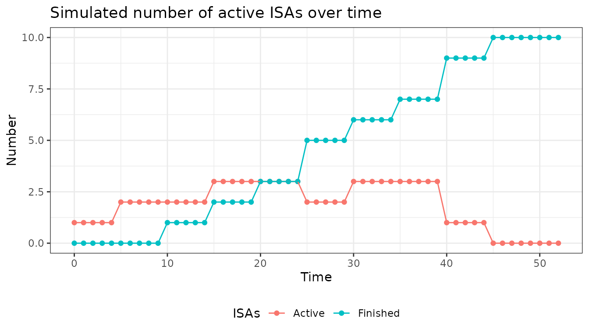
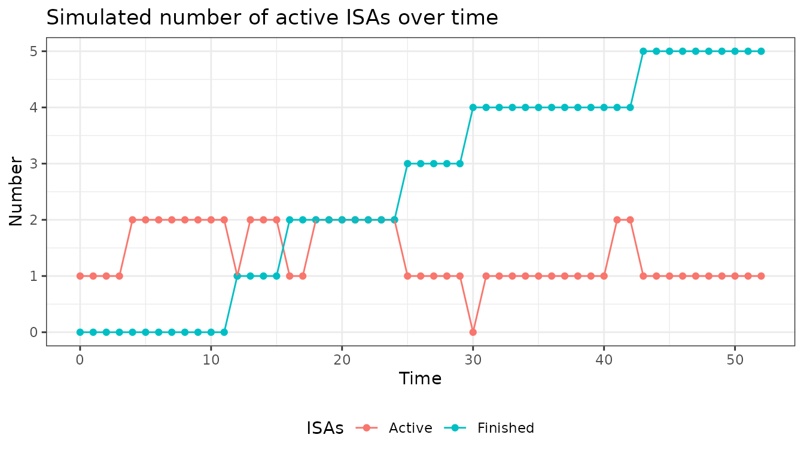
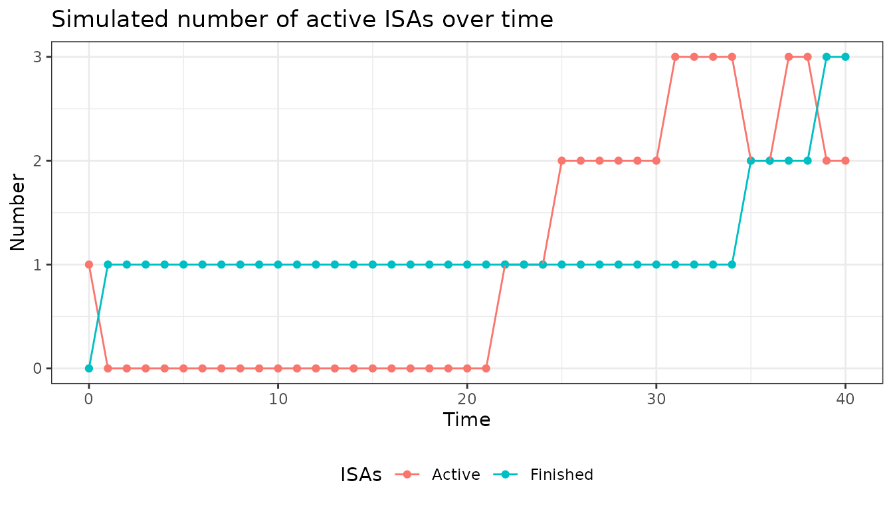

Introduction
This document is an additional guideline to the intervention inclusion module of the simple package. It can act like a bootcamp providing you with hands-on experience. Below will be some tasks of increasing complexity to make you comfortable using the module and find out difficulties.
Recap
To help you remember the essentials of the module’s functionality a short summary is provided. For further information on the module, please read the vignette first.
Function arguments
The module will have global variables as well as specific arguments that can be added and specified in the recruitment function
Functions
Constructor Function new_lNewIntr
The idea is to be able to include global variables of the simulation as well as any additional variable you would want to impact your recruitment.
The central function of the module is new_lNewIntr. It
defines the “rules” of intervention inclusion you want to implement in
the simulation.
Tasks
Try to use the module to program the following tasks according to the instructions. You can display the solution upon clicking the code button. The examples of the vignette may serve as a helping hand. The plots below show what the plotted output could look like.
1. With a 50:50 % chance let 1 or 2 ISAs enter every 5th time unit and let the maximum number of total ISAs be 10.
x <- new_lNewIntr(
fnNewIntr = function(lPltfTrial, lAddArgs){
# if the conditions are met (every 5th time unit & there are less than 10 ISAs so far) we randomly draw 1 or 2 to determine how many ISAs should be added
if((lPltfTrial$lSnap$dCurrTime %% 5 == 0) & (length(lPltfTrial$lSnap$vIntrInclTimes) < lAddArgs$dIntrMax)){
dAdd <- sample(c(1,2), 1)
} else {
# otherwise no ISA is added
dAdd <- 0
}
},
# here we set the maximum number of total interventions to 10
lAddArgs = list(dIntrMax = 10)
)
plot(x)
2. Let the entry of ISAs be random, with an entry probability of 0.2 at each time step, the maximum number of total ISAs be 6, the maximum number of parallel ISAs be 3 and the ISAs duration be 12.
*Hint: duration of ISAs is specified in the plot function, as this is not a feature of the lNewIntr module.
x <- new_lNewIntr(
fnNewIntr = function(lPltfTrial, lAddArgs){
# if the conditions are met (number of parallel ISAs <3, number of total ISAs < 6) we randomly draw if an ISA is added with the stated probabilities
if((length(lPltfTrial$lSnap$vIntrInclTimes) < lAddArgs$dIntrTotMax) & (lPltfTrial$lSnap$dActvIntr < lAddArgs$dIntrMax)){
dAdd <- sample(c(1,0), 1, prob = c(lAddArgs$prob, 1-lAddArgs$prob))
} else {
dAdd <- 0
}
return(dAdd)
},
# here the additional arguments are specified (max number of parallel interventions, max number of total interventions, entry probability)
lAddArgs = list(dIntrMax = 3,
dIntrTotMax = 6,
prob = 0.2)
)
# here we set the duration of interventions to be fixed (cIntrTime) with duration 12 (dIntrTimeParam)
plot(x,
cIntrTime = "fixed",
dIntrTimeParam = 12
)
3. Let the entry and exit of ISAs be random with probabilities 0.2 and 0.1 respectively. Only consider a simulation period of 40 timesteps instead of the default of 52. Additionally no recruitment should happen between time unit 10 and 20.
*Hint: the number of time steps, recruitment window and exit probability are specified in the plot function, as these are not features of the lNewIntr module.
x <- new_lNewIntr(
fnNewIntr = function(lPltfTrial, lAddArgs){
if(lPltfTrial$lSnap$bInclAllowed){
dAdd <- sample(c(1,0), 1, prob = c(lAddArgs$prob, 1-lAddArgs$prob))
} else {
dAdd <- 0
}
return(dAdd)
},
lAddArgs = list(prob = 0.2)
)
# here we set the arguments which are not part of the lNewIntr module, but are still specified
# we have to state that the exit of ISAs is random (cIntrTime) with a probability of 0.1 (dIntrTimeParam) at each time step. Additionally we change the simulation duration (dCurrTime) to 40 time steps and define the enrollment window (bInclAllowed).
plot(x,
cIntrTime = "random",
dIntrTimeParam = 0.1,
dCurrTime = 1:40,
bInclAllowed = c(rep(TRUE, 10), rep(FALSE, 10), rep(TRUE, 20)), # has to be a vector of the same length as dCurrTime so that for each time step a value can be taken from the vector
)
Remarks
Notice the different meanings of lAddArgs$dIntrMax in example one and two. In example 1 it specifies the total number of ISAs to be allowed in the trial whereas in example 2 it refers to the number of ISAs running in parallel. This should emphasize the flexibility of the module and show you, that the user has control over these variables and their names as well as the structure of the function.
The global variables saved in the list lPltfTrial have a fixed name which can not be changed as it is implemented in many different modules. As mentioned above the vignette of the module lPltfTrial will contain an overview of all the global variables used in any module. The naming convention consists of lowerCamelCase with the first part being a letter describing the data type of the object(l = list, b = bool, v = vector, d = number)